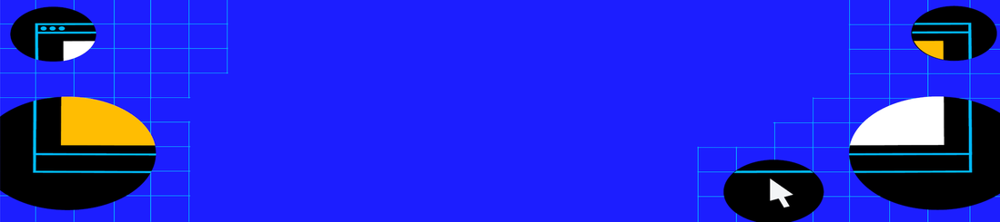

Welcome to the IETF
IETF 111 Hackathon: Coding across time zones
More than 250 participants around the world collaborated on 18 projects during the fourth entirely online IETF Hackathon held 19-23 July 2021.
Learn more about the work accomplished, and how to sign up for the next IETF Hackathon.
Upcoming events
- 
IETF 112 Online
IETF 112 will start on Monday, 8 November 2021 and run through Friday afternoon, 12 November 2021. Sessions will from 12:00-18:00 UTC each day.
Online IETF 113 Bangkok
IETF 113 starts Saturday 19 March and runs through Friday afternoon, 25 March.
Bangkok
What's new?
Fresh perspectives from IETF Administration LLC Board
Two members of the IETF Administration LLC Board of Directors bring deep expertise and experience from outside the realm of developing technical standards, providing perspectives about the factors and priorities important to advancing the community’s work and IETF mission more broadly.
27 Sep 2021IETF 111 Hackathon: Coding across time zones
The IETF 111 Hackathon was held July 19-23, 2021. This was the 19th IETF Hackathon, and the 4th held as an online only event. For most people involved in the IETF the past several years, the IETF Hackathon marks the start of each IETF meeting.
8 Sep 2021
Search the IETF email archive
Much of the daily work of the IETF is conducted on electronic mailing lists. A new mail archive tool realizing the requirements developed in RFC 6778 is now in use:
Search IETF Datatracker
The IETF Datatracker contains data about IETF documents, working groups, meetings, agendas, minutes, presentations, and more:
Understanding the Internet Engineering Task Force
Working Groups
Working Groups are the primary mechanism for development of IETF specifications and guidelines. Working Groups are typically created to address a specific problem or to produce one or more specific deliverables (a guideline, standards specification, etc.).
Featured Working Group
QUIC
The QUIC working group will provide standards-track specifications for a UDP-based, stream-multiplexing, encrypted transport protocol, based on pre-standardization implementation and deployment exper…
quic quic@ietf.orgRequest for Comments (RFCs)
The IETF publishes RFCs authored by network operators, engineers, and computer scientists to document methods, behaviors, research, or innovations applicable to the Internet.
Featured RFC
QUIC: A UDP-Based Multiplexed and Secure Transport
This document defines the core of the QUIC transport protocol. QUIC provides applications with flow-controlled streams for structured communication, low-latency connection establishment, and network…
RFC 9000was: draft-ietf-quic-transportTopics of interest
Automated network management
The IETF is working on standards for automated network management which, as the name implies, aims to improve and make more efficient management of networks as they continue to increase in size and complexity.
The Internet of Things at the IETF
The Internet of Things (IoT) is the network of physical objects or "things" embedded with electronics, software, sensors, actuators, and connectivity to enable objects to exchange data with the manufacturer, operator, and/or other connected devices.
New transport technology
The development of new transport technologies in the IETF provides capabilities that improve the ability of Internet applications to send data over the Internet.
Next IETF meeting
Stay tuned for the latest information on IETF 112
Visit the IETF 112 meeting webpage